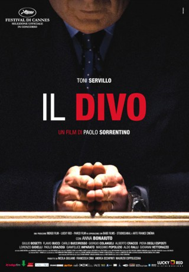

#8758 Il Divo - Der Göttliche
Auszeichnungen: für 1 Oscars nominiert
 
 IMDB-Wertung: 7.3 / 10
IMDB-Wertung: 7.3 / 10  Metascore: 0
Metascore: 0 
The story of Italian politician Giulio Andreotti, who has served as Prime Minister of Italy seven times since the restoration of democracy in 1946.
Jahr: 2008
Dauer: 118 Minuten
FSK: 16
Land: Italien Studio: Delphi Filmverleih ProduktionTonspuren: DTS - ,
Untertitel:
Auflösung: 1080p (1920x816) Größe: 10752 MB
Genre: Drama, Biographie
Regisseur: Paolo Sorrentino
Drehbuch: Paolo Sorrentino
Soundtrack: Teho Teardo
Darsteller:
 Toni Servillo als Giulio Andreotti
Toni Servillo als Giulio Andreotti- Anna Bonaiuto als Livia Danese
- Flavio Bucci als Franco Evangelisti
- Carlo Buccirosso als Paolo Cirino Pomicino
- Giorgio Colangeli als Salvo Lima
- Alberto Cracco als Don Mario
- Piera Degli Esposti als Signora Enea
- Paolo Graziosi als Aldo Moro
- Gianfelice Imparato als Vincenzo Scotti
- Massimo Popolizio als Vittorio Sbardella
- Nuot Arquint als Killer di Lima
- Paolo De Giorgio als Stefano Bontate
- Angelo Zito als Giancarlo Caselli
- Cristina Serafini als Caterina Stagno (uncredited)
- Giulio Bosetti als Eugenio Scalfari
- Lorenzo Gioielli als Mino Pecorelli
- Aldo Ralli als Giuseppe Ciarrapico
- Giovanni Vettorazzo als Magistrato Scarpinato
- Orazio Alba als Gaspare Mutolo
- Fernando Altieri als Oscar Luigi Scalfaro
- Stewart Arnold als Larry Schoenbach
- Antonello Avallone als Medico
- Gaetano Balistreri als Tommaso Buscetta
- Dezio Bettini als Licio Gelli
- Pietro Biondi als Francesco Cossiga
- Giovanni Bissaca als Senatore
- Claudio Bonis als Pippo Calò
- Achille Brugnini als Cardinale Angelini
- Simone Carella als Rino Formica
- Domenico Centamore als Balduccio Di Maggio
- Michele Chiadò als Senatore Pellegrino
- Umberto Contarello als Deputato
- Carlo Cozzani als Cardinale I.O.R.
- Luciano Cravino als Magistrato
- Roberto De Rossi als Giornalista Ospedale
- Renato Di Pietro als Stefano Rodotà
- Salvatore D'Onofrio als Capo Scorta Andreotti
- Lombardo Fornara als Michele Sindona
- Massimo Franceschi als Giornalista
- Domenico Gennaro als Francesco Marino Mannoia
- Orlando Gerace als Nino Salvo
- Carlo Giraudo als Magistrato Natoli
- Victor Goubanov als Mikhail Gorbachev
- Ernesto Izzo als Deputato
- Manuela Lamanna als Impiegata Quirinale
- Fiorenza Liberto als Donna Festa
- Giusto Lo Piparo als Deputato
- Bob Marchese als Senatore
- Luigi Messina als Presidente Ingargiola
- Roberto Turtur Minutillo als Deputato Quotazioni
Datei: X:\2008(G-M)\Il Divo - Der Göttliche (2008, FSK16, 1920x816).mkv seit 27.04.2018
Festplatte: HD 2008(G-Z)-2009(A-F)
 Es gibt insgesamt 73 Filme in der Gruppe '2008(G-M)'
Es gibt insgesamt 73 Filme in der Gruppe '2008(G-M)'